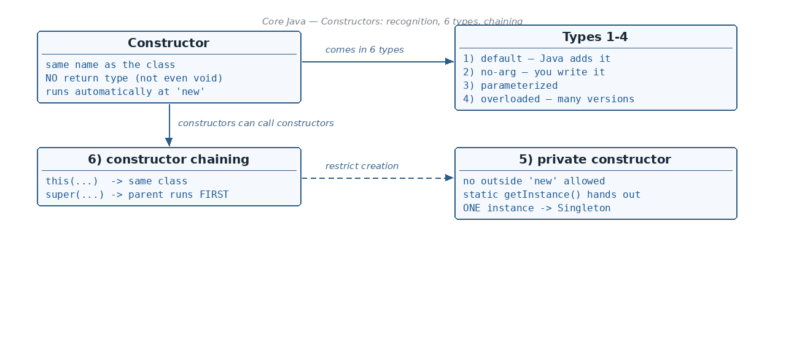

How do we recognise a constructor? (Name + Return Type)
☕ 8 min read · 🎬 Video walkthrough · 📊 UML diagram · 💻 Runnable code
⚡ In a nutshell — What a constructor is and how it differs from a method · Why a constructor cannot be static, final, abstract (or synchronized) · Constructors and inheritance — why they are not inherited · Why abstract classes have constructors but interfaces do not
new Employee(), you are calling the constructor.void, int, Employee, ...)new — Explicitly, by name, on demandstatic / final / abstract / synchronized? — No — none of these — Yes (all allowed on methods)class Employee {
int empId;
}
public class CreateDemo {
public static void main(String[] args) {
Employee obj = new Employee(); // <-- this calls the constructor Employee()
System.out.println(obj.empId);
}
}
// Output:
// 0
The Employee() after new is the constructor call — we always have to call a constructor to get an object.

These two things — the name and the missing return type — distinguish a constructor from a method:
class Employee {
Employee() { // NAME = class name, NO return type -> CONSTRUCTOR
}
void Employee2() { // has a return type (void) -> just a method
}
}
The notes make a subtle point: for a constructor, you write no return type because implicitly Java treats the class itself as the "return type" — new Employee() hands you back an Employee. But the moment you write a return type explicitly, it stops being a constructor:
class Employee {
Employee() { } // constructor
void Employee() { } // WRITING void EXPLICITLY -> this is a METHOD
// int Employee() { } // same story: a method named like the class
}
Remember: Same name as the class + no return type = constructor. Add any return type and Java quietly treats it as an ordinary (badly named) method.
The notes reason through each keyword. Here is the logic in simple words:
staticA constructor's whole job is to initialise instance variables — the per-object data:
class Employee {
int id; // instance variable (one per object)
Employee(int p) {
id = p; // 'id' is an INSTANCE variable, not a static one
}
}
Imagine it were allowed:
static Employee(int p) { // (1) if static... IMPOSSIBLE
id = p; // whose 'id'? static code has NO object to work on!
}
static means "belongs to the class, no object needed" — but a constructor exists precisely to build an object. The two ideas contradict each other. (2) Also, a constructor implicitly calls super() — the parent's constructor — which is again object-creation work that makes no sense in a static world.
finalfinal on a method means: it cannot be overridden. But constructors are never inherited by child classes (see next section) — and you can only override something you inherit. So there is nothing final could possibly prevent. The keyword would be meaningless — Java rejects it.
abstractabstract means: "declaration only — no body — some child will implement it later." But a constructor must run right now when new is called, and it is not inherited, so no child could ever supply the missing body. An abstract constructor could never be implemented — contradiction again.
synchronizedOnly one thread can be constructing a brand-new object anyway — no other thread can see the object before the constructor finishes — so synchronized is unnecessary and forbidden.
Constructors are NOT inherited by the child class.
class Employee {
Employee() { }
}
class Manager extends Employee {
// The Employee() constructor does NOT arrive here.
// If you write "Employee() { }" inside Manager, Java says:
// "method must have a return type"
// — it is treated as a METHOD, so you'd have to give it a return type.
}
A child class gets its own constructors, and each of them (implicitly or explicitly) calls the parent's constructor with super() — but the parent constructor itself never becomes a member of the child.
abstract class Employee {
abstract void print(); // -> DECLARATION only, not definition (no body)
}
class Manager extends Employee {
void print() { System.out.println("I am a Manager"); }
// constructors of Employee are still NOT inherited here
}
An abstract class cannot be instantiated directly, but it does have a constructor — because when a child object is built, the parent portion must be initialised too (via super()).
interface Employee {
public void print(); // — declaration only
}
class Manager implements Employee {
public void print() { System.out.println("Working"); }
}
Why no constructor? Because an interface cannot be used to create an object — new Employee() is impossible for an interface, and there are no instance fields to initialise. Objects are only created of the implementing classes, so only those classes need constructors.
Remember: Abstract class → no direct objects, but has a constructor (children call it through
super()). Interface → no objects, no state, therefore no constructor at all.
The notes list 6 kinds. One by one:
If you write no constructor at all, Java secretly adds an empty one for you — the default constructor. That is why new Employee() worked earlier even though we never wrote Employee().
class Employee {
int empId;
// no constructor written -> Java adds: Employee() { } automatically
}
Same as default, but you define it manually. It takes no arguments; you get to put your own code inside.
public class Calculator {
Calculator() { // written BY US -> "no-arg", not "default"
System.out.println("Calculator ready!");
}
public static void main(String[] args) {
Calculator c = new Calculator();
}
}
// Output:
// Calculator ready!
A constructor with parameters, used to fill the object's fields at birth.
public class Calculator {
String name;
Calculator(String x) { // parameterized constructor
name = x;
}
public static void main(String[] args) {
Calculator c = new Calculator("Casio");
System.out.println(c.name);
}
}
// Output:
// Casio
Remember (important trap): if we manually add any constructor, Java does NOT add the default constructor anymore. In the class above,
new Calculator()would be a compile error — the only way in isnew Calculator("..."). Add a no-arg constructor yourself if you still need one.
Just like method overloading: several constructors, same name (the class name), different parameter lists.
public class Calculator {
String name;
int model;
Calculator() { }
Calculator(String x) { name = x; }
Calculator(String x, int m) { name = x; model = m; }
public static void main(String[] args) {
Calculator a = new Calculator();
Calculator b = new Calculator("Casio");
Calculator c = new Calculator("Casio", 991);
System.out.println(b.name + " " + c.model);
}
}
// Output:
// Casio 991
Making the constructor private means nobody outside the class can call new — object creation is restricted. The class then usually exposes a static method (callable with just the ClassName) that hands out the one-and-only instance. This is the Singleton Pattern.
public class Database {
private static Database instance; // the single, shared instance
private Database() { // PRIVATE: no outside 'new' allowed
System.out.println("Connecting once...");
}
public static Database getInstance() { // static -> called via ClassName
if (instance == null) {
instance = new Database(); // created only the first time
}
return instance;
}
public static void main(String[] args) {
Database d1 = Database.getInstance();
Database d2 = Database.getInstance();
System.out.println(d1 == d2); // same object?
}
}
// Output:
// Connecting once...
// true <- both variables hold the SAME single instance
this() and super()One constructor can call another. Two directions:
this(...) — call another constructor of the same class (must be the first statement).super(...) — call the parent class constructor (also first statement; Java inserts super() implicitly if you write nothing).Chaining with this() — the Calculation example from the notes (field names tidied up so it compiles):
class Calculation {
String name;
int numId;
Calculation() {
this(10); // jump to Calculation(int)
System.out.println("3. no-arg finishes last");
}
Calculation(int empId) {
this("hi", empId); // jump to Calculation(String, int)
System.out.println("2. int constructor");
}
Calculation(String x, int p) {
this.name = x; // 'this.' = the current object's field
this.numId = p;
System.out.println("1. two-arg constructor runs first");
}
}
public class ChainingDemo {
public static void main(String[] args) {
Calculation c = new Calculation();
System.out.println(c.name + " " + c.numId);
}
}
// Output:
// 1. two-arg constructor runs first
// 2. int constructor
// 3. no-arg finishes last
// hi 10
The call hops along the chain first (no-arg → int → two-arg), the deepest one finishes first, then control returns back up the chain.
Chaining with super() — the Manager / Person example:
class Person {
Person() { // 1st invoked
System.out.println("Person constructor — 1st invoked");
}
}
class Manager extends Person {
Manager() {
super(); // calls the Person constructor
System.out.println("Manager constructor — 2nd invoked");
}
}
public class SuperDemo {
public static void main(String[] args) {
Manager m = new Manager();
}
}
// Output:
// Person constructor — 1st invoked
// Manager constructor — 2nd invoked
Even though we asked for a Manager, the Person constructor runs first — the parent part of the object must exist before the child part is finished. If you don't write super(); yourself, Java writes it for you as the first line.
new Manager()
|
v
Manager() --- super() ---> Person() (runs FIRST)
^ |
'------- returns ---------'
then the rest of Manager() runs (SECOND)
static (they initialise instance data and need an object), final (never inherited, so nothing to stop overriding), abstract (must have a body that runs at new), or synchronized.super().super() when a child is built); interfaces have none (no objects, no state).getInstance()), and chaining with this() / super().this()/super() must be the first statement; the parent constructor always finishes before the child's body.👏 Found this useful? Give it a few claps so more developers discover it, and follow for the whole series — every article ships with a UML diagram, runnable code, a narrated video, and a companion PDF. Happy building! 🚀